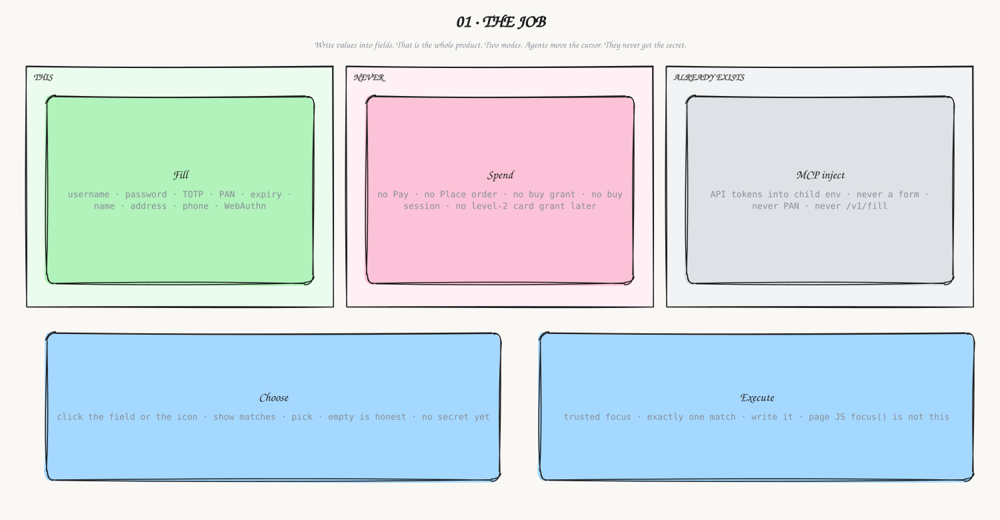
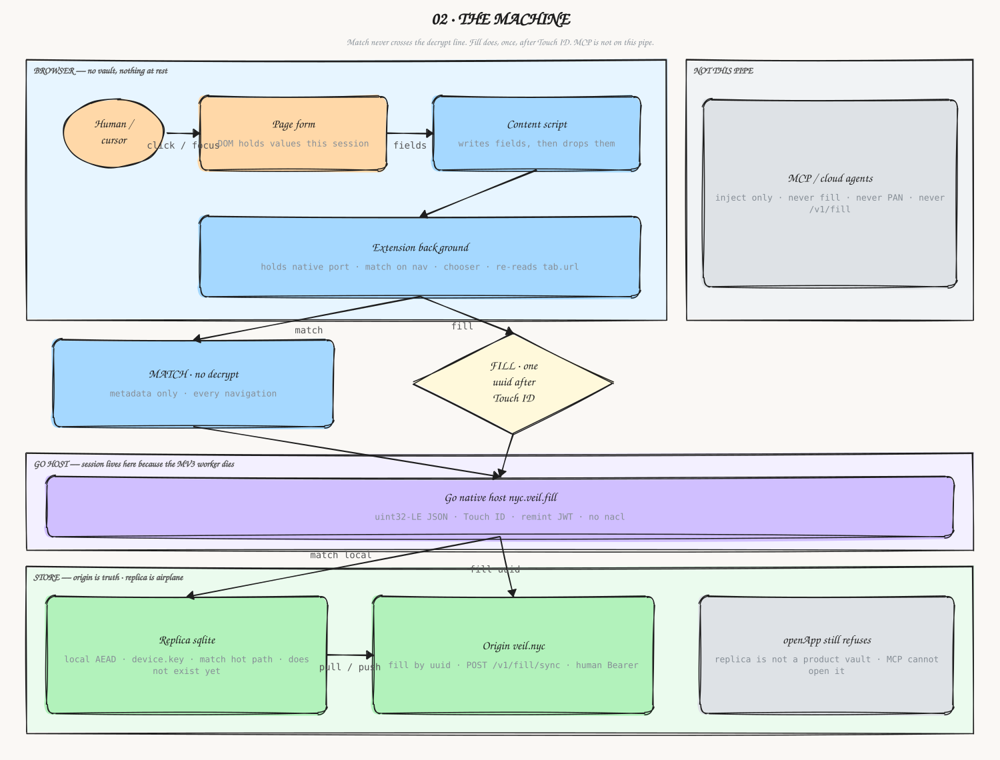
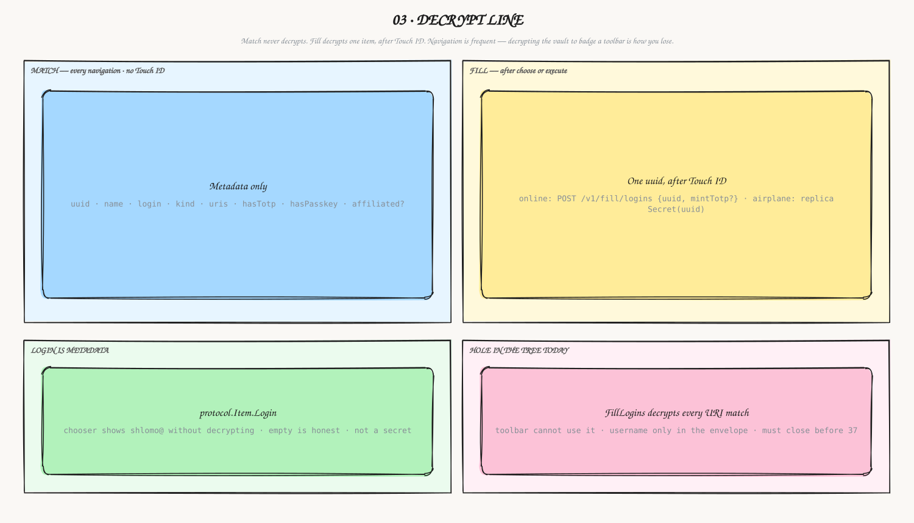
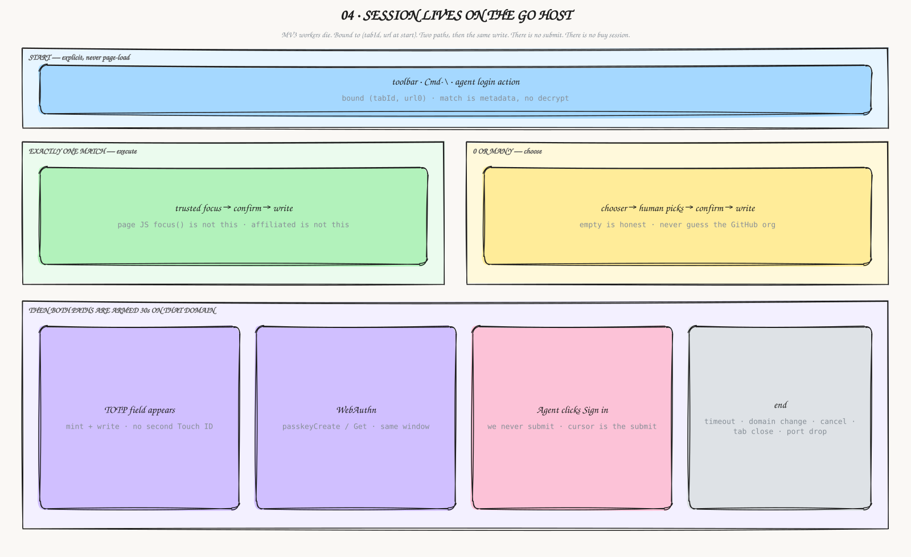
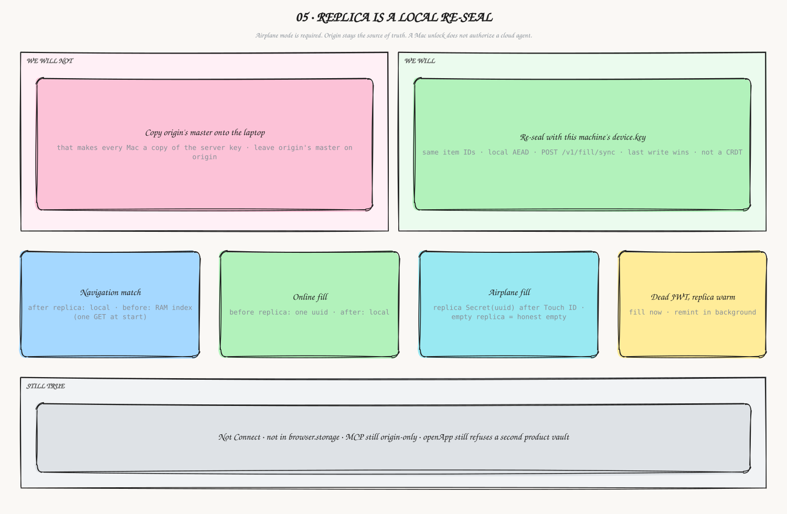
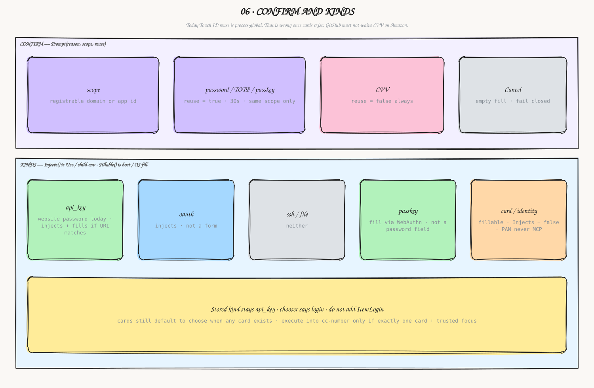
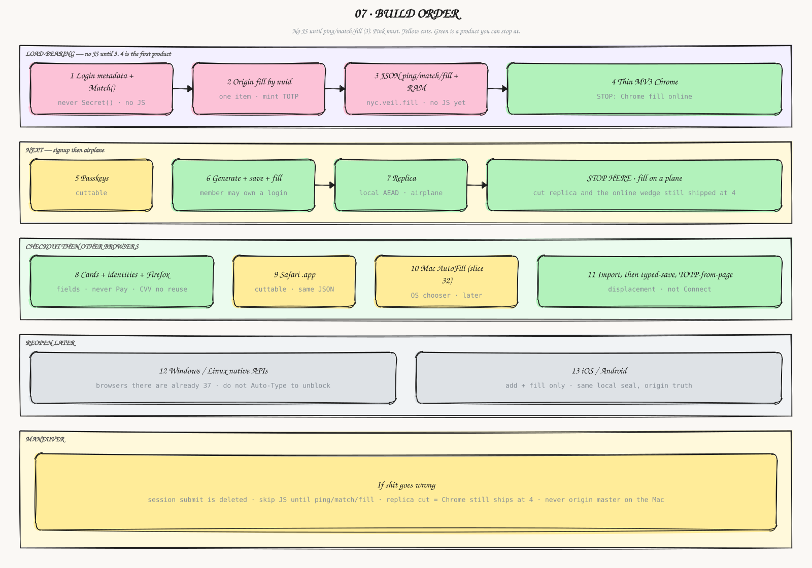
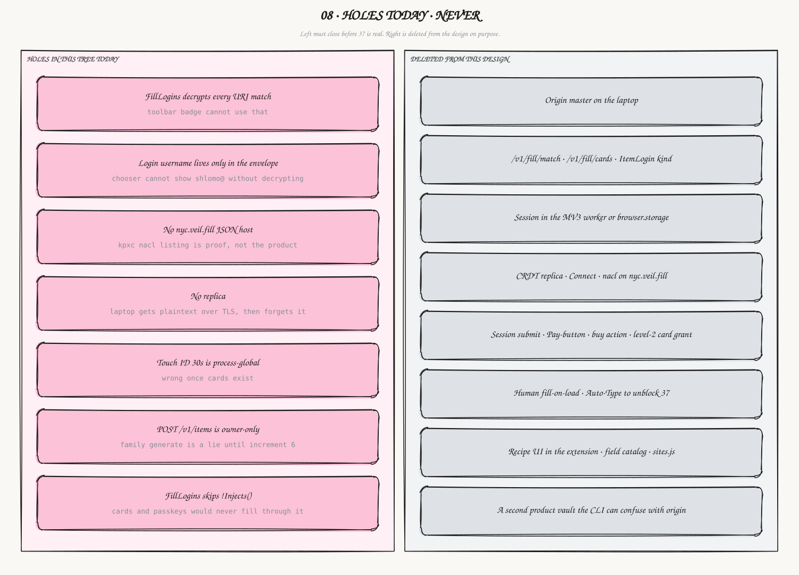
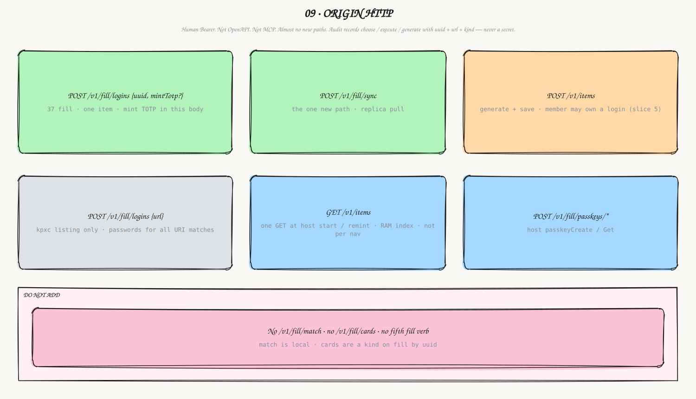

01. Fill writes values into fields. Spend is not a mode. MCP inject already exists and never touches a form. Choose vs execute is the whole product.

02. One pipe, one direction. Match never decrypts. Fill decrypts one uuid after Touch ID. Session lives on the Go host. Replica is airplane, origin is truth.

03. Navigation is frequent. Decrypting the vault to badge a toolbar is how you lose. Login username is metadata so the chooser can show shlomo@ without opening the envelope.

04. A session starts on purpose, lives on the Go host, writes fields. We never submit — the agent clicks Sign in.

05. Do not copy origin’s master onto the Mac. Re-seal with this machine’s device.key. Match is a RAM index (one GET at start), then replica. Dead JWT + warm replica = fill now, remint in the background.

06. 30s Touch ID reuse is per registrable domain. CVV never reuses. Website passwords stay api_key; the chooser says login. Cards inject nothing.

07. No JS until ping/match/fill. First product is Chrome fill online (4). Replica is optional after that. Pink must. Yellow cuts.

08. Left is what this tree does wrong today. Right is deleted from the design on purpose.

09. Human Bearer. Not OpenAPI. Not MCP. One new path: POST /v1/fill/sync. GET /v1/items is once at host start, not per navigation. Do not add /v1/fill/match.

10. Generate + save + fill is one job. Empty match = signup, execute may mint. Existing items + new-password = change-password, choose only — never silent rotate.